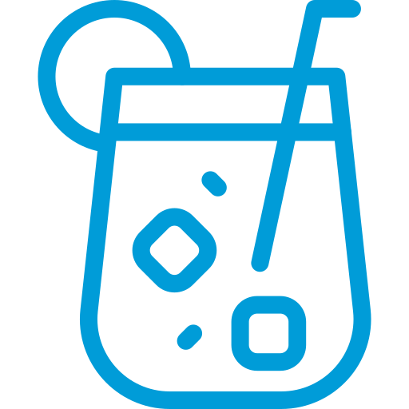

ОСВІЖАЮЧІ ЧАЇ
Малина - Грейпфрут
320
Яскравий смак
Оздоровлює
Поєднання двох насичених смаків і достаток вітамінів надає бадьорості і підніме настрій. Малина допомогає потистояти
хворобам, а грейпфрут прискорити обмін речовини
хворобам, а грейпфрут прискорити обмін речовини

500 мл
Груша - Лічі
340
Еко-енергетик
Низько-калорійний
Вибух смакових емоцій і стиглої чуттєвості. Не дарма
лічі
називають плодами кохання! Солодкість соковитої груші приємно доповнена холодно-м'ятною свіжістю: в поєднанні з молочним
улун і бутонами троянд.
називають плодами кохання! Солодкість соковитої груші приємно доповнена холодно-м'ятною свіжістю: в поєднанні з молочним
улун і бутонами троянд.
500 мл
Каркаде - Манго
330
Солодко-кислий
Анти-застуда
Що очищає
Щільний і солодкий смак приємно оттеняється кислуватими
нотками каркаде. Велика кількість вітаміну С захищає організм
від вірусних інфекцій, а пектин сприяє очищенню організму.
нотками каркаде. Велика кількість вітаміну С захищає організм
від вірусних інфекцій, а пектин сприяє очищенню організму.
500 мл
Виноград - Жасмин
340
Покращує травлення
Знімає стрес
Одне з найбільш гармонійних поєднань як у смаку, так і в ароматі. Заспокоїть і подарує прохолоду в спекотний день.
500 мл
Алое - Яблуко
340
Вітаміни
Покращує настрій
Яскравий і легкий, з квітковими нотками в смаку і ароматі.
Корисний для травлення, покращує обмін речовин і відновлює процеси організму.
Корисний для травлення, покращує обмін речовин і відновлює процеси організму.
500 мл
Північний Мохіто
330
Освіжає
Оздоровлює
Анти-похмілля
Яскравий і легкий, з квітковими нотками в смаку і ароматі.
Корисний для травлення, покращує обмін речовин і відновлює процеси організму.
Корисний для травлення, покращує обмін речовин і відновлює процеси організму.
500 мл
Лісова Чорниця
330
Покращує травлення
Насичений
Терпкий та щільний смак пробуджує від втоми, стимулює мозкову діяльність. Багата на мікроелементи чорниця покращує травлення та знижує рівень цукру у крові.
500 мл
М'ятний Дюшес
340
Підвищує імунітет
Соковитий та яскравий, цей напій дивує гармонійним поєднанням смаків, які збадьорують! Детокс, антиоксидант, і вітамінний коктейль: ви вже знаєте, де знайти усю свіість цього літа!
500 мл
ЧОРНІ ЧАЇ
Ассам Бехора
180
Стимулює роботу мозку
Захищає серце і судини
Сильний, терпкий з яскравим солодовим присмаком. Тонізує, заряджає енергією і підвищує працездатність.
500 мл
Ерл Грей Преміум
190
Оздоровлює
Підвищує імунітет
Бергамот володіє чудовим тонким ароматом і має тонізуючий ефект.
500 мл
Топінги / порція
50
М'ята, лимон, чебрець, імбир, шавлія, квітки липи, квітки троянди,
лист смородини, мед
лист смородини, мед
ЯПОНСЬКИЙ ЧАЙ
Генмайча
210
Напій відрізняється жовтим відтінком і дуже м'яким повітряним ароматом, в якому переплелися солодкуваті нотки обсмаженого
рису і традиційного зеленого чаю.
рису і традиційного зеленого чаю.
500 мл
КИТАЙСЬКІ ЕЛІТНІ ЧАЇ
Лун Цзин Преміум
230
Лун цзин — чай з потужною внутрішньою силою. Смак чаю
варіюється від трав'яного і квіткового до медово-горіхового. Покращує розумові процеси, структурує логіку, прояснює свідомість,
робить розум чітким, ясним, швидким.
варіюється від трав'яного і квіткового до медово-горіхового. Покращує розумові процеси, структурує логіку, прояснює свідомість,
робить розум чітким, ясним, швидким.
500 мл
Бі Ло Чунь Преміум
260
Напій має солодкий ніжний смак, в якому присутні медов, фруктові і квіткові відтінки. Чай багатий антиоксидантами, вітамінами і мінералами, сприяє профілактиці серцево-судиних захворювань, підвищенню розумової і фізичної активності, зміцнює імунітет.
500 мл
Те гуань Інь "Залізна Богиня"
270
Чай від ста хвороб
Допоможе при головних болях
Приголомшливий аромат орхідеї і бузку, солодкий медовий смак.
500 мл
Женьшеневий улун
230
Вітаміни та мікроелементи
Оздоровлює
Легкий і солодкуватий, але злегка терпкий і пряний смак. Піднімає настрій, підвищує працездатність і концентрацію уваги.
500 мл
Да хун пао. Великий червоний халат
350
Укріпляє кістки
Очищує організм
Корисний для здоров'я освіжаючий чай, який надає розслабляючу і заспокійливу дію на організм.
500 мл
Молочний улун
240
Сжигає жири
Антиоксидант
Виражений молочно-вершковий смак і тонкий аромат зеленого чаю. Прекрасно активує захісні функції організму, сприяє відновленню сил.
500 мл
Полуниця Імператора
240
Чудовий пов'язаний чай у вигляді кульки, прикрашений пелюстками червоної конюшини. При заварюванні розпускається яскравим букетом. Настій світло-оливкового кольору, смак ніжний з тонким ароматом квітів.
500 мл
Лічі Хризантема
230
При заварюванні розпускається пишна, величезна зелена квітка з жовтою серцевиною з ніжних хризантем. Настій кольору слонової кістки, ароматний, легкий. У смаку чітко відчувається квіткова нота та ніжність зеленого чаю.
500 мл
ЖАСМІНОВИЙ ЧАЙ
Молі чжень Чжу "Жасмінова Перлина"
250
Смак дуже легкий і м'який, солодкуватий, відсутня терпкість, аромат запашний і ніжний. Сприятливо впливає на травну систему, тонізує і освіжає в жарку пору року і зігріває в холод, є хорошим антидепресантом, підтримує бадьорий стан і гарний настрій.
500 мл
ПУЕР
Пу Ер Золотий Преміум 2003 г
280
Вишуканий, насичений, маслянистий, майже бархатистий смак з нотками шоколаду і горіха. Напій прекрасно бадьорить і тонізує, багатий багатьма мікроелементами, корисними речовинами і вітамінним комплексом, а також служить стимулятором імунітету.
500 мл
Ча Гао "Смола Пуеру"
410
Кожен ковток чудово тонізує, бадьорить, заряджає енергією і Чайною Силою, покращує здоров'я, настрій, активізує роботу мозку. Смак м'який, глибокий. Без землянистого присмаку, характерного для традицыйного пуеру. Аромат приэмний, димно-деревиний.
500 мл
ЧЕРВОНИЙ ЧАЙ
Те Цзи "Золотий Равлик" Преміум
270
Теплий, соковитий і оксамитовий чай з хлібно-медовими нотками, з нюансами спецій, шоколаду та сухофруктів. Смак соковитий, об'ємний, витончений, з властивою солодощі і переливається відтінками житнього хліба, свіжого меду, східних прянощів і шоколаду.
500 мл
ТРАВ'ЯНІ ЧАЇ
Ройбуш
200
Без кофеїна
Анти-застуда
Покращує травлення
Не містить кофеїн і підходить для дітей і матерів-годувальниць. Є багатим джерелом анти-оксидантів. Його навіть називають Чаєм Довгого Життя.
500 мл
Матум / Плоди Дерева Баель
220
Захищає серце
Покращує травлення
Для легень
Не містить кофеїн і підходить для дітей і
матерів-годувальниць. Є багатим джерелом анти-оксидантів. Його навіть називають Чаєм Довгого Життя.
500 мл
Блакитний чай з лавандою
240
Незвичайний
Покращує пам'ять
Сприяє похуданню
Туристи, які гостюють в Тайланді, неодмінно шукають там цей чай. Його незвичайний насичений колір та приємний
аромат, а також корисні властивості, приваблюють людей з усього світу.
500 мл
Трав'яний збір
200
Трав'яна суміш із суцвіть ромашки, апельсина, мальви, лимонної трави, м'яти, шкірки цитрусових і шипшини. З натуральним ароматом апельсина.
500 мл
Саган-Дайля (Трава щастя)
260
Підвищує опірність організму до навколишньої дійсності. Насичений вітамінами і силами для життя. Смак солодкувато-квітковий.
500 мл
Іван чай
290
Густий настій темнр-горіхового кольору, ароматний з медовими, тягучими нотками. Чай вважається прекрасним заспокійливим і болезаспокійливим засобом.
500 мл
ФРУКТОВО-ЯГІДНІ ЧАЇ
Зігріваючий
350
Ароматний напій не тільки збагачує енергією, зігріває і дозволяє розслабитися, але і зміцнює імунітет і допомогає боротися з різними захворюваннями.
500 мл
Манго - груша
350
Яскравий по своєму смаку, чай має хороші відновні властивості і великий запас вітамінів.
500 мл
Обліпиха з апельсином
340
Чудовий повний вітамінів тонізуючий напій. Цей чай неймовірно корисний, в ньому містяться вітаміни, мікроелементи, амінокислоти, антиоксиданти.
500 мл
Імбир-липа
330
Корисний у всіх сенсах, підтримає імунітет та порадує смаком айви у поєднанні з імбирем, лимоном та липою.
500 мл
Тропічний
350
Яскрава феєрія смаку та аромата. Чай багатий на вітаміни, корисні мінерали, клітковину та антиоксидантні елементи.
500 мл
Хризантема-банан
350
Квітучий, яскравий та сонячний. Для будь-якої погоди і гарного настрою.
500 мл
Малиновий з імбирем
340
Корисні і сильні лікувальні властивості малини і імбиру зміцнять імунітет і поліпшать настрій.
500 мл
Байський чай
330
Ягідно-фруктовий чай з яскравим та сильним смаком. Приносить сильний заряд літнього настрою.
500 мл
Пуер на соку
430
Вишневий або гранатовий на
вибір
Дивовижно багатий та глибокий смак. Незвичне поєднання вражає уяву смаковитими нотами та відтінками. Крім того, напій дуже корисний - здатний позбавити головного болю, зміцнити імунітет, добре збадьорити організм.
500 мл
ЕКЗОТИЧНІ ЧАЇ
Масала
1500
Пікантне поєднання Індийських спецій і гарячого молока, напій підвищує настрій і володіє сильним зігріваючим і тонізуючим ефектом.
На рослинному молоці + 100 грн
500 мл
Блактина Масала
1550
Легка масала без імбиру, але все така ж смачна. Завдяки поєднанню індійських спецій і гарячого молока піднімає настрій і зігріває тіло.
На рослинному молоці + 100 грн
500 мл
Мароканський
330
Аромат східних спецій причаровує, дає відчуття тепла і
спокою. Цей дивовижний чай підвищить концентрацію і покращить кровообіг.
500 мл
АЛКОГОЛЬНІ ЧАЇ
П'яна вишня
480
500 мл
Медовий глінтвейн
470
500 мл
----------------------------------------------------------------------------------------------------------------------------------------------